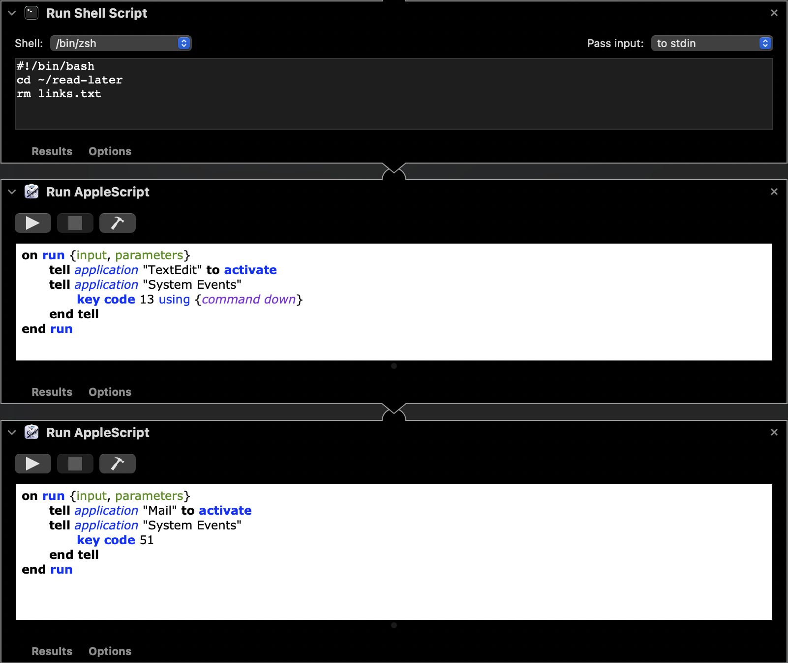

Automating GoodLinks and My Read Later Workflow
Date: May 16, 2023I often find articles while I’m at work that I’d like to save for reading later. On my personal devices that’s a pretty simple task - I just use the share extension within Safari to quickly send a URL to my GoodLinks account.
Understandably, I don’t really want to add any of my personal accounts to a company owned computer (let alone we can’t even install non approved apps), so I’ve resorted to emailing myself articles and then manually adding them into GoodLinks from within the Mail app.
After a few months of using this workflow I thought to myself, “Hey - I wonder if I can use AppleScript to parse through my email to extract the URLs and then add those links into GoodLinks”. While I found that AppleScript could handle the parsing of my email and gather the links, I noticed that there wasn’t a straightforward way to also add them into GoodLinks. I did discover however, that GoodLinks has built in Apple Shortcuts support to add a new link by reading the contents of the system clipboard.
I sat down and started to list out all the steps that I would need to complete in order for my script to work (this script uses a combination of AppleScript and Apple Shortcuts - all inside an Automator workflow).
-
I set up a rule in Mail.app that took any incoming emails that were sent from my work email address and automatically moves them from my inbox into a dedicated folder called “Read Later”.
-
Using AppleScript, I told macOS to open Mail.app, navigate to the “Read Later” folder that had been added to my favorites, and select all the messages in that folder.
-
Using an included action within Automator.app called “Get Selected Mail Messages”, I gathered the selected items and passed them to the proceeding step.
-
These next few steps loops through the selected items, extracts the URLs, opens a new text file in TextEdit.app, and pastes the URLs into the file.
-
The script then uses AppleScript to save the newly created text file as “links.txt” into a predetermined location.
-
Now it’s time to trigger the Apple Shortcut to take care of getting these links from the text file into GoodLinks. One of the ways to trigger a Shortcut is to use a system app called “Shortcuts Events” which lets you run shortcuts from any AppleScript script, without launching the Shortcuts app.
-
Add URLs From Text File to GoodLinks Shortcut
-
The input file path is defined (this directory and file name never changes).
-
The text file is split into separate lines so that each URL can be processed on its own.
-
A loop is created to parse through each URL and copy each one to the clipboard.
-
After a URL is in the clipboard, GoodLinks can then add a new link to its inbox from the system clipboard.
-
This loop continues until all the URLs in the text file are added to GoodLinks.
-
-
A shell script is ran that navigates to the “read-later” directory on my local machine and deletes the previously generated text file.
-
AppleScript is used to close any open TextEdit windows.
-
Finally AppleScript is used to switch to Mail and delete all messages from “Read Later” folder.


Now all I have to do at the end of the day is simply run this Automator workflow and within seconds have all my desired links in GoodLinks ready to go.